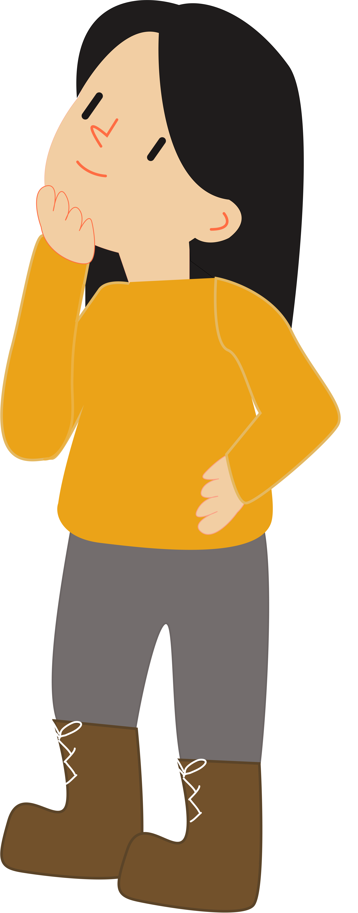
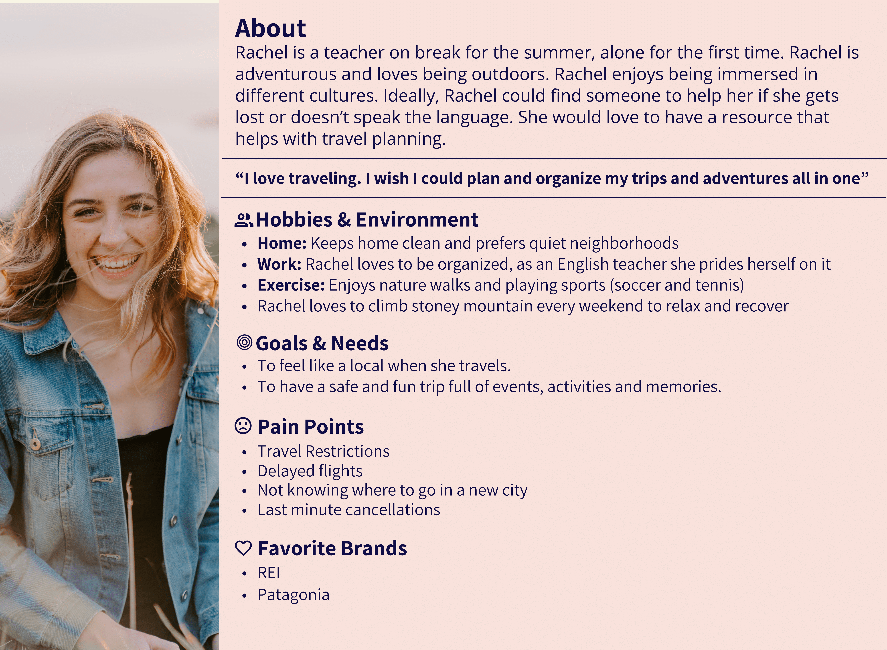

Where it all began
How do we make traveling for users a smoother journey?
The Challenge
Finally after years of pandemic, normal traveling is resuming. How does planning and actually traveling
go again? What events are happening in this other country and are all the stores and restaurants even
there anymore?
That is a challenge Monico aimed to address. Following the design thinking process, we aimed to
develop a site and phone app that aids in planning trips or connecting with a local who can.
See my notes and reflections in these side notes over here! 
Explorations & Research
We used affinity diagrams to generate open-ended research questions for user interviews. With our
refined list, we interviewed 5 individuals that regularly travel (pandemic aside). We asked questions
like: Tell me about some challenges you've experienced while traveling or planning a trip. How was
navigating in a foreign country? Any challenges communicating with locals? Walk me through your planning
process.
An initial finding from our interviews:
Our users like to know where locals go and what events are happening.
We followed up with conducting 200 Maze surveys to collect feedback on app and website features.
Initially, we thought of creating a translation or language app, but ultimately decided to use the
interviews to explore the user's challenges and needs first instead of assuming what they needed.
Interviews were completed via telephone and Microsoft Teams video call.
Analyzing our data

Returning to the affinity diagram, our team first categorized answers based on questions we asked then
grouped them into major topics. Using this map, we developed our key insights:
Our remote team conducted our gathering and analysis virtually via Figma & Figjam.
- Users want to feel safe during traveling and know their belongings are secure
- Users want to know where to go, what the current events are (local news/major celebrations).
- Users do not see language as a challenge - they use Google translate and many locals can speak English.
- 82% of the users (164 people) said that they would use a guide to assist them if they had access to them.
- 44% said they preferred a person over an app for translation.
- 42% said they preferred phone apps.
- 33% felt that Time and Money were their biggest barriers to tour guides.
Our research revealed some surprising and humbling data:
Our users did not feel the need for learning a language when traveling abroad and did not encounter
any challenges communicating with locals as we had originally thought.
Visualizing and understanding our users
With our extensive research completed, it was time to define who our users were. We synthesized all the
interview data and created a user persona.


This persona was helpful in reminding us who we are designing for and to put our opinions aside.
Redefining and comparing
Our team needed to redefine our research question based on our findings. We determined our new goal was
to answer this: "How might we provide insider tips from locals to improve travel experiences for our
users?".
We also conducted a competitor analysis to compare current design and content layouts of indirect
and direct competitors.

The competitor analysis helped us determine what layouts were user-friendly and what issues we should avoid as we designed our website.
Brainstorming, ideating, rinse, & repeat.
Our team used more "How Might We" questions to define our information architecture and user flow. This included: How might we incorporate all of our users needs (safety and knowledge of events) into one cohesive service? How might we design our
layouts so our user can search for what they need?
During the following few weeks, we used these questions to guide our wireframing and prototyping.
First, we created a Informational Architecture diagram for organizing and prioritizing our page and content layout. This helped us decide the content on primary and secondary pages as well as user flow.
High-Fidelity Designs-Round 1
After iterating, we settled on the design below and made a mobile version to make sure the design is responsive and effective across different screen sizes. We added just enough information and interactions to allow users to navigate through the pages and complete tasks presented to them during usability testing.
We decided to start with a larger screen size and gracefully degrade to a mobile screen. This challenged us to think about what things were necessary for our users and what could be removed as we moved to a smaller screen.
Testing and getting feedback
With our prototyping done, we recruited participants and conducted usability tests to see how users interact with our websites and identify where we can make improvements.
Test Objectives: Can users easily complete the task? What paths do they take? What can we improve?
Tasks: 1. Search for activities in Madrid, Spain. 2. Book a tour guide.
User Summary:
We were curious if our users enjoyed our design, would want to reuse it, and could accomplish their goal.
- Method: Moderated Usability Testing (Think Aloud) & Multichannel Study
- # of Participants: 10 users
- Demographics: 25-35 years old; male & female
- Average Time: 10 minutes
- Task Completion Rate: 100%
- What we did well: Color scheme, Illustrations, Animations
- Improvement: Consistency between pages, calendar and hamburger menu affordance, security of checkout
We wanted to test user flow and also assess how our website does on different screens.
Our users completed the task, but encountered many roadblocks along the way. Some features confused users while others were not used at all, to our surprise. Users felt some pages of the site reminded them of Wikipedia and lacked engagement.
After extensive discussion and review, our team decided we needed to re-think our home and services designs.
Final Product
Our final product is a platform where locals can post about places and events they enjoy in their hometown so tourists can use it while planning their trips. For people that want planning assistance, we offer a tour guides.
Changes we made
We wanted to give people options depending on their planning style.
- Implemented a collapsible sticky navigation on the left, catering to people's tendency for Z-Pattern of reading.
- The calendar and tour guide pages are on separate screens, utilizing the progressive disclosure design pattern.
- Our home page was made scrollable, advertising our service along with our main platform.
We followed the Agile method of creating a Minimal Viable Product (MVP). We tackled these changes first because we felt user flow was most important.
The sticky navigation gives the users control and freedom. Progressive disclosure with the calendar and tour guide section prevents errors and avoids overwhelming the user.